01 · 데이터

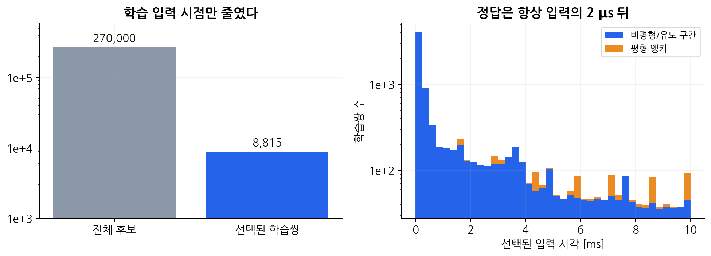
조건부 모델·물리 벌점·전처리·시간 학습·일반 ANN을 비교한 기록입니다. 완주와 정확도, raw와 물리 보정을 나눠 봅니다.
NRMSE = RMSE(Cantera, NN) / RMS(Cantera). 백분율이 아닌 무차원 비율입니다. 정확도 통과는 full10ms + T·8반응종 모두 ≤0.1인 사후 진단이며, 불완주에 전체 점수를 주지 않습니다. repaired는 clipping·원소 투영·엔탈피 온도 보정·유효 후보 선택을 포함한 별도 시스템입니다.
실험 장부 CSV · 평가 수치 종합 CSV · 슬라이드별 근거 · 커밋 이력
저장된 CSV와 궤적에서 다시 그렸습니다. 원본 결과를 이동·삭제하거나 새 학습을 실행하지 않았습니다.

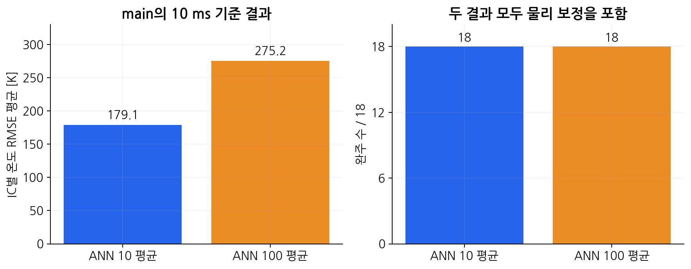
근거: summary.csv
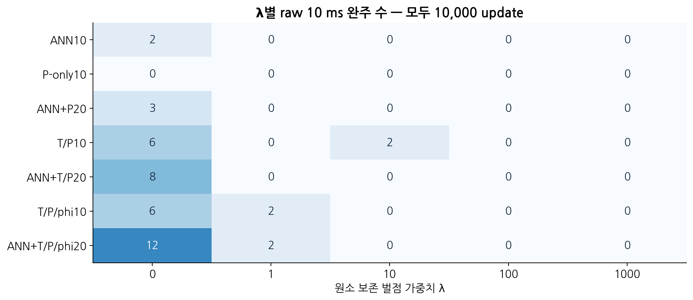
근거: per_IC_NRMSE.csv
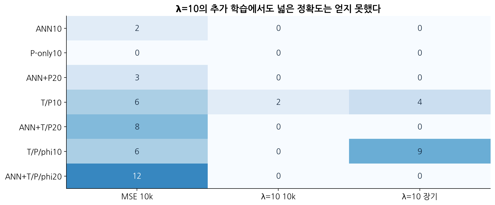
근거: per_IC_NRMSE.csv
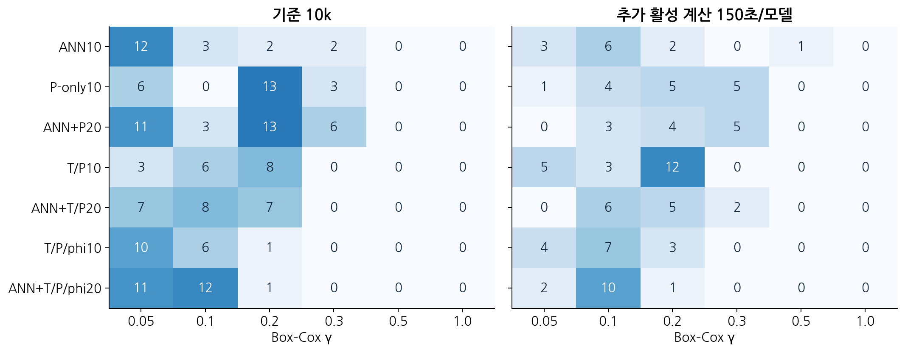
근거: per_IC_NRMSE.csv
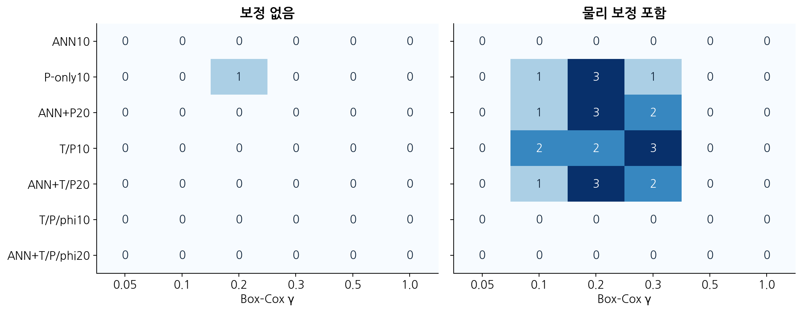
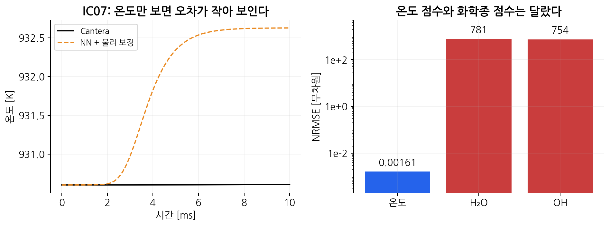
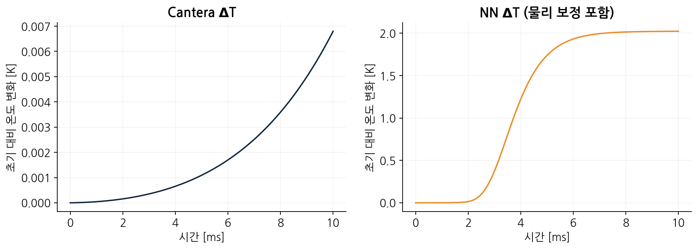
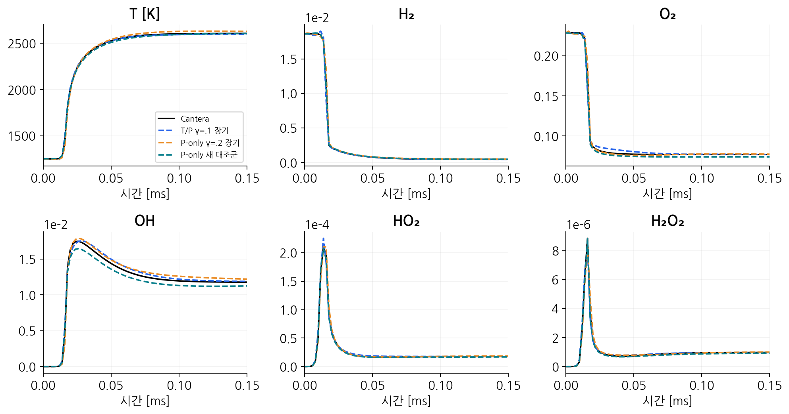
근거: passing_variable_NRMSE.csv · selected_trace_provenance.json
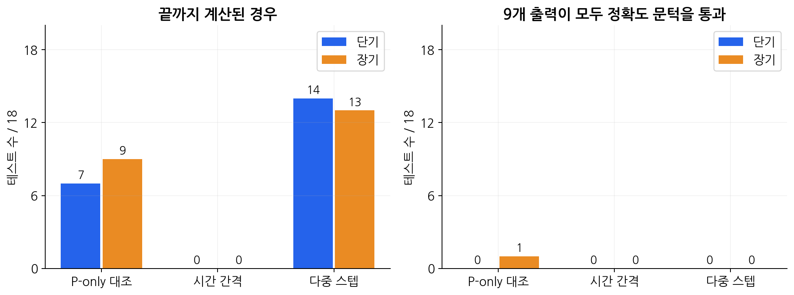
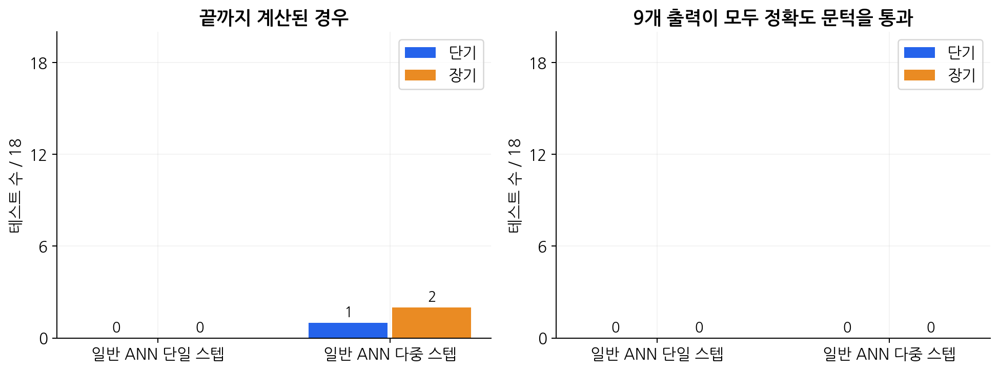
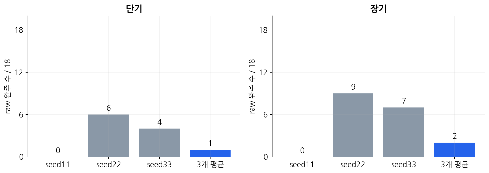
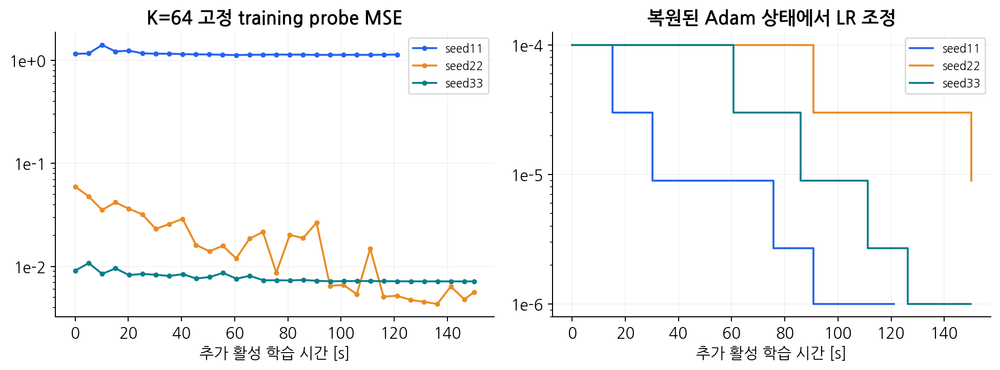
근거: history.csv · history.csv · history.csv
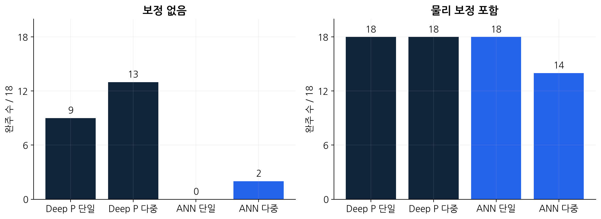
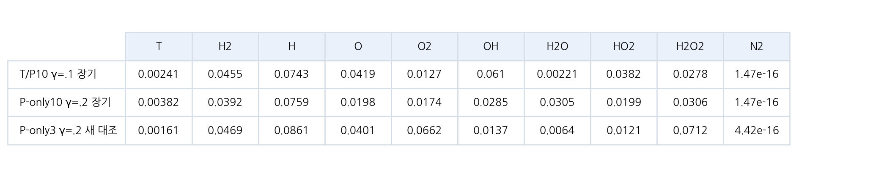
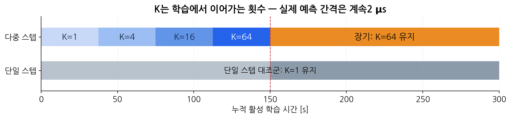
근거: config.json · config.json
아래 링크는 근거 커밋에 고정된 GitHub 원본입니다. 전체 PDF는 18개 IC를 각각 확인하도록 구성됩니다.
원본은 GitHub에서 엽니다. 버전별 보고서, 여러 페이지 PDF와 중복 기준 그림이 포함되어 파일 수를 학습 모델 수나 독립 실험 수로 더하면 안 됩니다.
raw/repaired 분류는 경로에서 추정했습니다. ‘원문 확인’은 미보정이라는 뜻이 아닙니다. main/bw 구분은 main 파일 blob과 비교했습니다.
| 실험 | 범위 / 모드 | 원본 경로 |
|---|